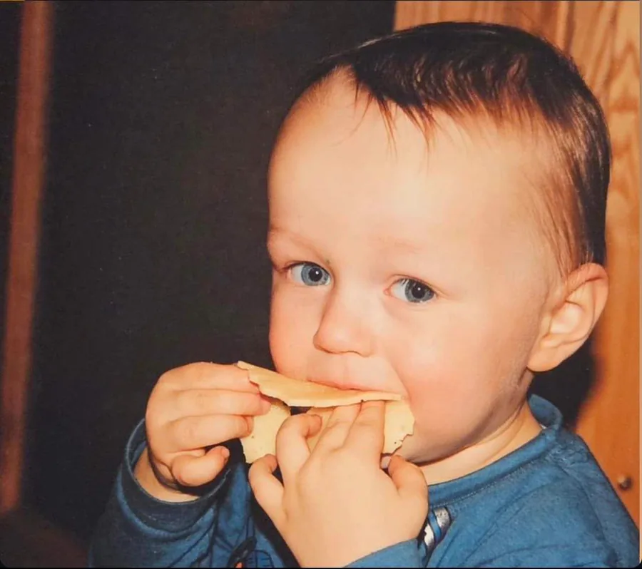

you found my "cheeseter" egg!
Hii!! I'm Justin, an IT student at NHL Stenden and Minecraft plugin dev
(you've probably met me on discord)
Most of my time goes into software, plugin development, building apps for smart
glasses that nobody owns yet, poking at whatever AI tool is trending this
week (cough...T3...), and pushing through all-nighters building whatever idea
I've told myself "will only take a few hours"
When I'm not working on something, I'm probably biking,
rock climbing, or playing video games
Feel free to reach out to me on LinkedIn!